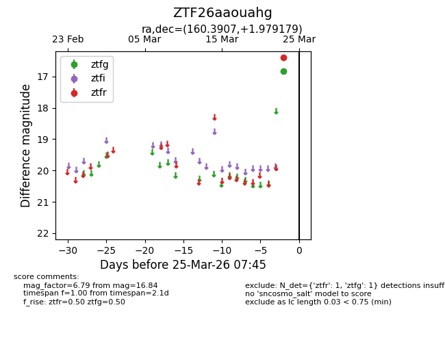
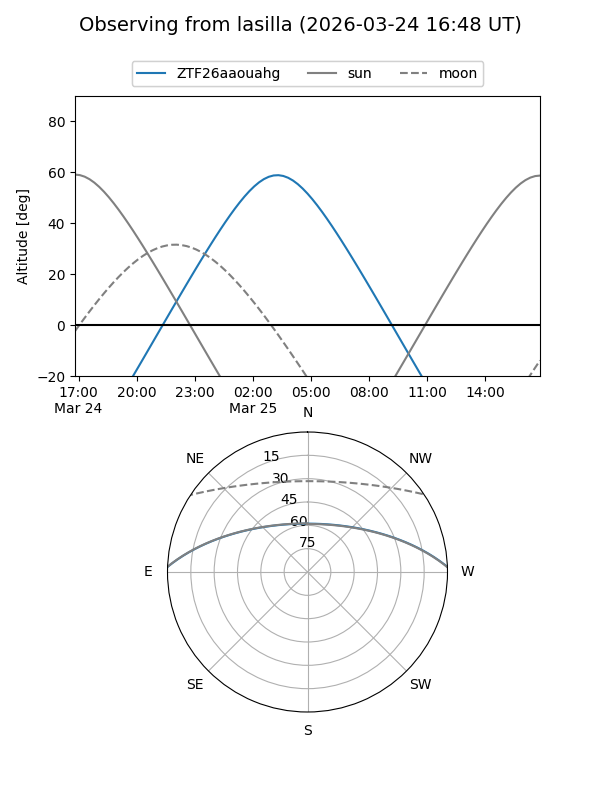
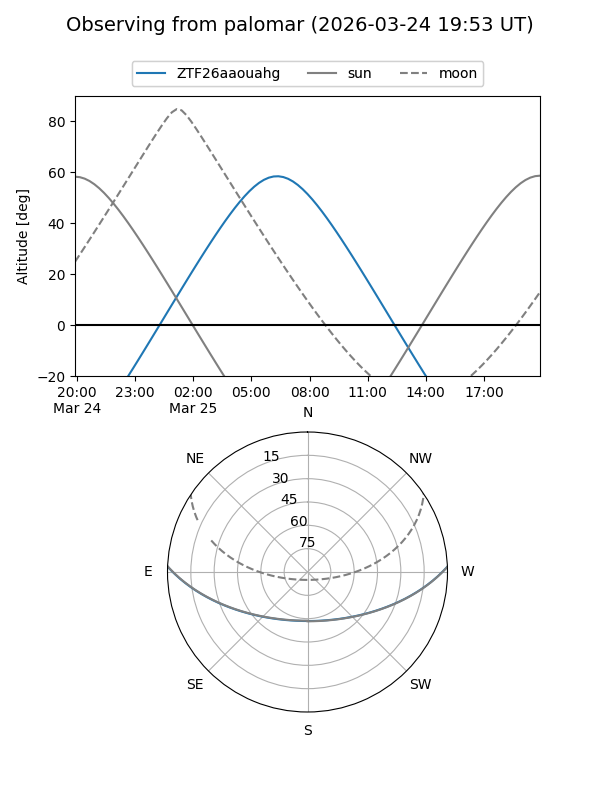

ZTF26aaouahg
Target ZTF26aaouahg at 2026-03-25 07:48
Aliases and brokers:
FINK: link
Lasair: link
ALeRCE: link
alt names
ZTF26aaouahg (ztf,fink_ztf)
Coordinates:
equatorial (ra, dec) = 160.3907,+1.97918
equatorial (HMS+DMS) = 10:41:33.77,+01:58:45.04
galactic (l, b) = (246.3297,+50.01109)
Flags:
Photometry:
last ztfg=16.84, ztfr=16.40
1 ztfg, 1 ztfr detections
Lightcurve

Visibility


Additional plots